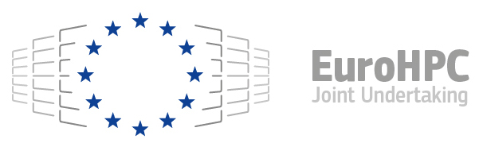
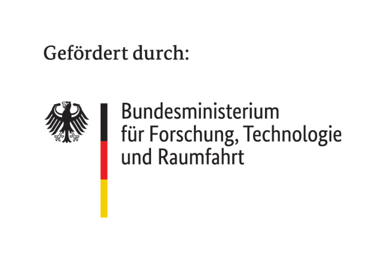

Overview#
The pySDC project is a Python implementation of the
spectral deferred correction (SDC) approach and its flavors, esp. the
multilevel extension MLSDC and PFASST. It is intended for rapid
prototyping and educational purposes. New ideas like e.g. sweepers or
predictors can be tested and first toy problems can be easily
implemented.
Features#
Variants of SDC: explicit, implicit, IMEX, multi-implicit, Verlet, multi-level, diagonal, multi-step
Variants of PFASST: virtually parallel or MPI-based parallel, classical or multigrid perspective
9 tutorials: from setting up a first collocation problem to SDC, PFASST, advanced topics and ParaDiag
Projects: many documented projects with defined and tested outcomes
Many different examples, collocation types, data types already implemented
Works with FEniCS, mpi4py-fft and PETSc (through petsc4py)
Continuous integration via GitHub Actions
Fully compatible with Python 3.10 - 3.13, runs at least on Ubuntu
Getting started#
The code is hosted on GitHub, see
Parallel-in-Time/pySDC, and PyPI, see
https://pypi.python.org/pypi/pySDC. While using pip install pySDC
will give you a core version of pySDC to work with,
working with the developer version is most often the better choice. We
thus recommend to checkout the code from GitHub and install the
dependencies e.g. by using micromamba. For this, pySDC ships with environment files
which can be found in the folder etc/ or within the projects. Use these as e.g.
micromamba create -f etc/environment-base.yml
If you want to install the developer version using pip directly from the GitHub repository, use this:
# optionally use venv
python3 -m venv name_of_pySDC_env
. ./name_of_pySDC_env/bin/activate
# drop @5.8 if you want to install the develop version
pip install git+https://github.com/Parallel-in-Time/pySDC@5.8
To check your installation, run
pytest pySDC/tests -m NAME
where NAME corresponds to the environment you chose (base in the
example above). You may need to update your PYTHONPATH by running
export PYTHONPATH=$PYTHONPATH:/path/to/pySDC/root/folder
in particular if you want to run any of the playgrounds, projects or
tutorials. All import statements there assume that the
pySDC‘s base directory is part of PYTHONPATH.
For many examples, LaTeX is used for the plots, i.e. a
decent installation of this is needed in order to run those examples.
When using fenics or petsc4py, a C++
compiler is required (although installation may go through at first).
For more details on pySDC, check out http://www.parallel-in-time.org/pySDC.
How to cite#
If you use pySDC or parts of it for your work, great! Let us know if we can help you with this. Also, we would greatly appreciate a citation of this paper:
Robert Speck, Algorithm 997: pySDC—Prototyping Spectral Deferred Corrections, ACM Transactions on Mathematical Software (TOMS), Volume 45 Issue 3, August 2019, https://doi.org/10.1145/3310410
The current software release can be cited using Zenodo:

BibTeX for the paper and for the software is on the website; GitHub’s “Cite this repository” gives the paper.
Contributing#
pySDC code was originally developed by Robert Speck (@pancetta),
and is now maintained and developed by a small community of scientists interested in SDC methods.
Checkout the Changelog to see pySDC’s evolution since 2016. It has a
software management plan (SWP), too, see here.
Parts of the code have been co-authored by AI; see aidecl.yaml for details.
Any contribution is dearly welcome! If you want to contribute, please take the time to read our Contribution Guidelines (and don’t forget to take a peek at our nice Code of Conduct 😉).
Acknowledgements#
This project has received funding from the European High-Performance Computing Joint Undertaking (JU) under grant agreement No 955701 (TIME-X) and grant agreement No 101118139. The JU receives support from the European Union’s Horizon 2020 research and innovation programme and Belgium, France, Germany, and Switzerland. This project also received funding from the German Federal Ministry of Research, Technology and Space (BMFTR) grants 16HPC047, 16ME0708 and 16ME0679K. Supported by the European Union - NextGenerationEU. The project also received help from the Joint Lab “Helmholtz Information - Research Software Engineering” (HiRSE).

